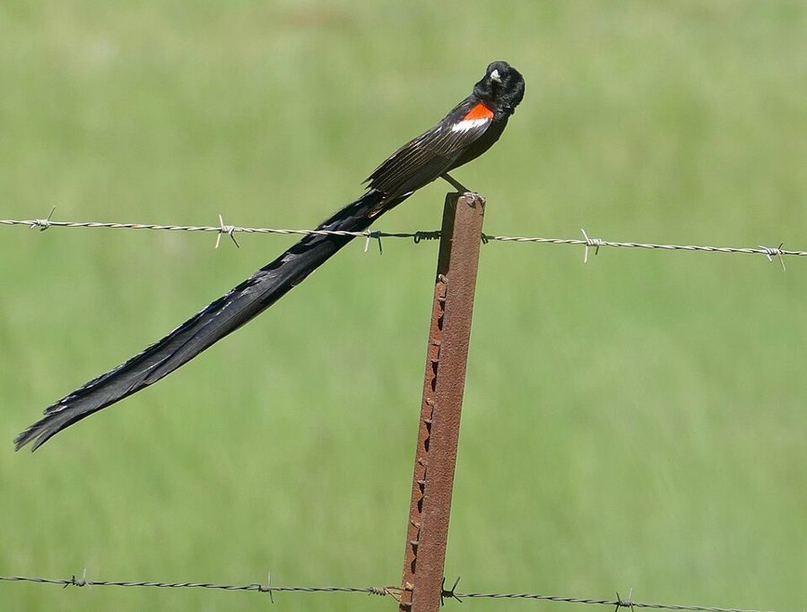
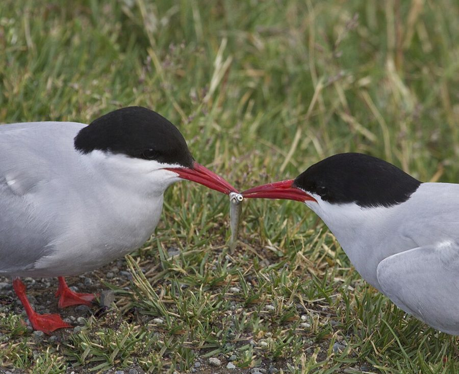
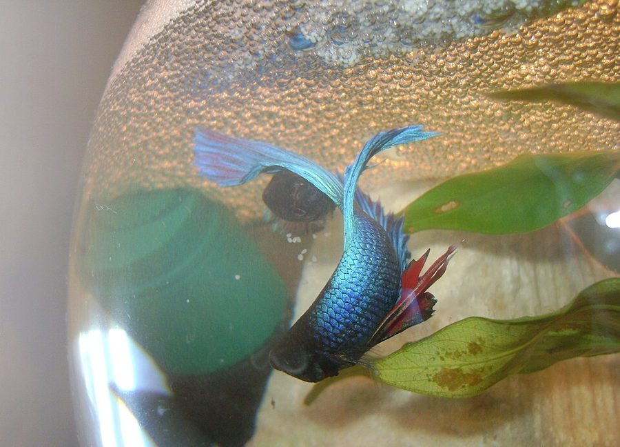
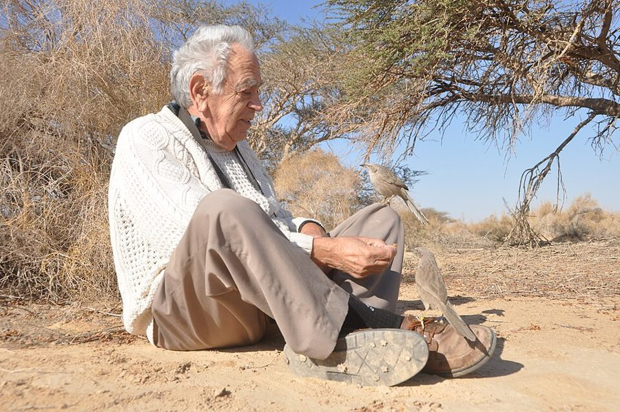
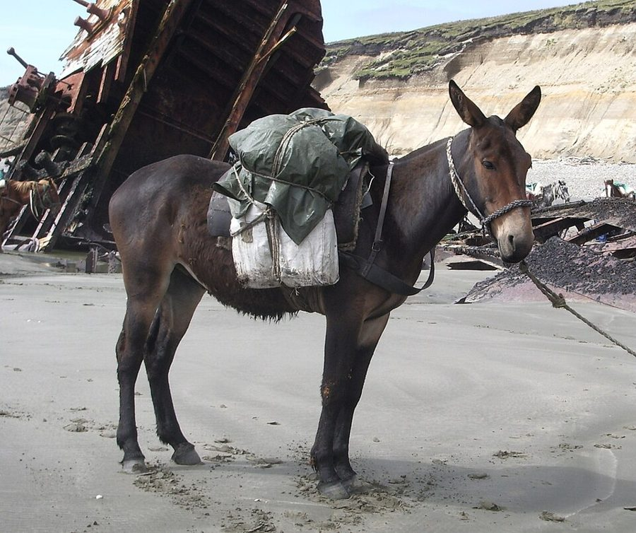

trap him
… way for a female to trap him.
把他拴住
trap 作动词，「困住、套牢」，不是名词「陷阱」。逼雄性先筑巢，就是让他交配后走不开。
第 9 章的后半。上半页说到雌性手里的筹码是拒绝交配，反制雄性有两条路。这一页先看「家庭幸福」那条路在动物身上是什么样子（筑巢、求偶喂食、识破骗子），插进一个难题：鱼类为什么常由父亲带孩子；再走「大丈夫」那条路：挑好基因，挑着挑着，被挑的变成了吸引力本身，扎哈维又给了一个更怪的解释。最后作者收束全章，推出雌雄的一般差异，并向人类提几个问题。读的时候抓两条线：每个解释是谁的、作者信几分；1976 年的判断哪些在尾注里改了。
上半页停在羞怯／放荡、忠诚／薄情的模型上：第 35 段说，在一定条件下羞怯对雌性的基因有利；1989 年的注 47 又说种群不会停在那个比例上，而是绕着它转圈，可以在 09a 的模拟器里亲眼看。这一页第 36 段开头说的「这种策略」，就是家庭幸福策略。这一页还会回指第 3 章的赛艇队、第 8 章扎哈维的「狐狸，狐狸」。
雌性挑配偶，挑的到底是什么：一个肯留下来的帮手，一身好基因，还是仅仅是「别的雌性也喜欢」？
读的时候带着这几个问题。不用先找答案，读完回来对照「检查一下理解」。
这一页是两条路，接一个总结。§6 把家庭幸福策略落到动物身上：筑巢、求偶喂食，顺带一个阴森的螳螂，再转到一场骗与识破的竞赛。§7 读着像岔出去了：作者停下来处理一个反例，鱼类为什么多是父亲带孩子，借学生 Carlisle 的假说把它解掉。§8 换到另一条路，大丈夫策略：先挑真本事的标志，再一转，挑「能生出受欢迎儿子」的标志，于是有了失控。§9 是一场辩论：扎哈维的反调、作者的反驳、建模者的失败，最后拿象海豹说明不靠累赘也能证明实力。§10 收束全章，从配子大小推出三条雌雄差异，最后两段突然转向人类，只提问不作答。读 §9 要连着注 50 读，否则会带走一个作者自己后来放弃的结论。
作者落在哪：两性的种种差异，可以看成双方各为自己的基因打算：雌性要么挑顾家的，要么挑基因好的，后一条路可能失控成夸张的装饰。1976 年他不信「累赘本身就是信号」，1989 年因 Grafen 的模型改口；对人类，他只提问。
这一页是原书第 9 章的第 6–10 节。原书各章没有小标题，粗体的节名是本站起的，下面是这一节第一段开头的几个词，在电子书里搜它就能跳过去。读完打个勾。
先把这一页用到、作者默认你懂的几个概念讲一遍。讲的是概念本身，作者拿它推出什么，读原书时自己看。前面讲过的进化稳定策略、亲代投资、家庭幸福策略和大丈夫策略、无情的约束、进化上的军备竞赛，点进去看。
达尔文 1859 年在《物种起源》里简短提过、1871 年在《人类的由来及性选择》里系统展开的概念：有些性状不帮个体活下去，只帮它得到配偶。它分两种：同性相争（雄鹿顶角、象海豹打架，赢家得到配偶），异性挑选（雌鸟在一群雄鸟里挑羽毛最漂亮的）。自然选择问「谁活得下来」，性选择问「谁留得下后代」，两者常互相拉扯：孔雀的尾巴招天敌，也招雌孔雀。达尔文最受质疑的是第二种，当时很多人不信雌性会有「眼光」。打个比方：应用商店里，有的软件靠功能胜出，有的靠图标抢眼胜出，后一种同样能冲上下载榜。
在这一页：第 46–50 段讲的就是异性挑选，第 51 段才点出这个名字。第 55 段的象海豹属于同性相争那一种。
费希尔（R. A. Fisher）1915 年提出、1930 年在《自然选择的遗传理论》里用几段话讲过的机制，今天通行叫「费希尔失控选择」。设想雌性因为某个理由偏爱尾巴长一点的雄性。爱长尾的母亲生下尾巴长的儿子（受下一代雌性欢迎）和同样爱长尾的女儿，于是「长尾」和「爱长尾」两种基因被绑在同一批后代身上，一起变多；偏爱越普遍，长尾越吃香，像一个正反馈的放大电路。最初的理由（长尾表示健康）后来可以不再要紧：别的雌性都爱长尾，你不跟就吃亏。刹车只有一个：尾巴拖累得抵过了它带来的交配机会。Lande 1981 年等人把它写成了数学模型。译本：「失去控制的过程」

在这一页：第 49 段铺垫，第 50 段极乐鸟的长尾就是它，星号是注 49。作者说的是 may have evolved，一种可能的来历。
以色列鸟类学家 Zahavi 1975 年提出：一个信号要让对方信，就得贵到装不起。孔雀的大尾巴是累赘，正因为是累赘，拖着它还活得好好的雄性才显得真有本事。日常的例子是「昂贵的承诺」：一封亲手写的长信比一条群发消息更能说明诚意。要和失控过程分开：失控过程里尾巴长是因为大家爱长尾，代价只是刹车；扎哈维这里，代价本身就是信号的意思。1990 年 Grafen 用 ESS 模型给出了一组条件：同样大的广告，对差的个体代价更高，于是每个个体都按自己的真实品质做广告。今天通行叫「累赘原理」。
在这一页：第 51–54 段转述并反驳它，星号是注 50（1989 年改口）。第 8 章的「狐狸，狐狸」、第 10 章瞪羚的跳跃，都是扎哈维同一路的想法。
按在书里出现的顺序排，标题前是节号。只讲到读懂这一页需要的程度。

第 38 段：不少鸟在繁殖季由雄鸟给雌鸟喂食。旧的解释说，雌鸟学雏鸟讨食的样子，是一种「退回幼年」的表演，正好打动雄鸟；作者给了一个更实在的读法：雌鸟正要造大卵，额外的食物她都用得上，雄鸟喂她，等于直接给卵投资，缩小了双亲起点上的投资差距。第 39 段的螳螂是极端版：雌螳螂比雄的大，交配时可能把雄的吃掉；作者说，在一种阴森的意义上，这也算雄螳螂给自己的孩子投资。

第 43 段的 Miss T. R. Carlisle 是作者在牛津带的本科生（注 48 写全名 Tamsin Carlisle），假说是在辅导课上提出的。第 24 段作者说他在一篇论文里指出 Trivers 犯了「协和式谬误」，那篇就是他和 Carlisle 1976 年在《自然》上合写的。假说本身见「读完」。注 48 说，Mark Ridley 把整个动物界的父亲照料梳理了一遍，用比较的方法检验了它，结果不支持。
第 49 段说，吸引力本身会被选择，这一点达尔文看到了，费希尔讲清楚了。达尔文 1871 年把雌性挑选列为性选择的一种，可他说不清雌性为什么偏爱某种装饰，只好归于她们的审美；费希尔（1915 年提出，1930 年写进书里）给了一个不需要审美的答案：偏爱一旦普遍，生出受欢迎的儿子本身就划算。注 49 又提到两个人：Russell Lande 把费希尔的几句话写成了数学（1981 年那篇是代表作），W. D. Hamilton 认为雌性挑的是抵抗寄生虫的能力（他和 Marlene Zuk 1982 年在《科学》上发表了这个想法）。

第 51 段的 A. Zahavi 是以色列鸟类学家。第 8 章作者讲过他的「狐狸，狐狸」：雏鸟故意大叫招来天敌，逼父母多喂。不利条件原理 1975 年发表在《理论生物学杂志》上，当时建模的人几乎都说它行不通，Maynard Smith 1976 年就写文章反驳过（第 54 段说他是建模失败的人之一）。第 53 段「我们最好的将军里有些只有一只眼」，是 Zahavi 当场的回嘴，不是作者的话。
注 50 的主角。作者引了一句在别处发表过的玩笑：Grafen 有个烦人的习惯，总是对的。他 1990 年在《理论生物学杂志》上发表 Biological signals as handicaps，把扎哈维的文字说法直接翻成 ESS 模型，证明在合理的条件下，诚实而有代价的广告可以是进化稳定的。注 50 还转述了他对扎哈维的四种读法的区分，并说早先的模型失败，多半是没考虑他偏爱的那一种。

第 58 段的例子：马和驴是近缘的两个物种，杂交生出骡子，骡子通常不育。母马怀一头骡子要十一个月，之后还要喂奶，这笔投资对她的基因全白费了；公马只损失一点精子和时间。作者拿它说明雌性在择偶上可输的更多，所以更该挑剔。他说有人查过的地方，雄性确实不那么挑，没有说是哪项研究。
按节排，每节前面是分节地图里的节名。标着「每个字都认识」的，是熟词生义、习语和反话，最容易读错。灰色的那几个字是原句里的位置，在电子书里搜它就能找到。
对着中译本（40 周年增订版）读的时候看这一节。下面是译本这几节和这一页尾注里会让人读错的地方：灰字是英文原文那一处的几个词，在英文电子书里搜它；方框里是译本的原句，在译本电子书里搜它。措辞别扭但意思没错的不收。全书的勘误汇总在译本勘误。
… finds a lisp or pouting lips attractive
译本：「有人认为这种行为对雄鸟具有天然的诱惑力」
这句后面原文还拿人作比：就像男人觉得成年女子口齿含糊、噘着嘴很可爱。下一句起是作者自己的解释（雌鸟要攒料造大卵），和前面「退回幼年」的旧说法是两回事，译本连在一起读，像是一个意思。
… fertilized, posthumously, by his own stored sperms.
译本：「储存在雄螳螂尸体内的精子」
原文是：卵由他自己的、早先储存下来的精子在他死后受精。精子是交配时留在雌螳螂体内存着的，posthumously 说的是「在他死后」，不是精子存在尸体里。
… benefit the survival prospects of both sons
译本：「这些基因有利于提高生育子女的机会」
原文说，好基因能提高儿子和女儿活下去的机会。大丈夫策略图的是孩子的质量，不是多生几个。
… what has happened in elephant seals
译本：「海象和极乐鸟大概也是这种情况」
海象是 walrus，另一种动物。这里和第 55 段的「海象」都应是象海豹：雄性争夺一群雌性的那种，第 5 章见过。上半页也有同样的错。
… Longevity is not prima facie evidence
译本：「但不一定就能够证明，它能够活得更久些」
这一句后面原文还有几句：挑老雄性是个不坏的办法，它至少证明活得久；可子女长寿没用，要多生孙辈，而活得久的雄性也许正是因为不肯为繁殖冒险。删掉后，紧接的「选择年老雄性……」没了来由。
… in American car design, the trend toward
译本：「它的儿子就不可能被认为是有吸引力的」
这句后面原文有一句：长尾的潮流像女装时尚、美国汽车的造型一样，自己起飞、越滚越快。这是作者给「失控」最直观的比方。
… encumbered himself with a sack of coal
译本：「像他这样一个健壮的大丈夫还是能够活下去的」
这句后面原文还有一个比方：两个人同时跑到终点，其中一个故意背了一袋煤，看的人自然断定他跑得更快。这是扎哈维思路最好懂的例子。
… Female horses should be very, very careful
译本：「雌驴应当十分谨慎」
原文是母马要小心，别和驴交配；后面「任何一个马的基因」「养出能生育的马」，主角都是马。道理反过来也成立，但对着原文读会以为看串了行。
… Many human societies are indeed monogamous.
译本：「人类社会事实上大多数实行一夫一妻制」
原文是 many。作者紧接着说也有一些社会乱交、许多社会是妻妾制，他要的正是「五花八门」这一层，好推出生活方式大体由文化决定。
… it is still possible that human males
译本：「然而，更大的可能性是」
原文是一个留了余地的说法：仍然有可能男性大体倾向乱交、女性倾向一夫一妻。前一句作者刚说人类主要靠文化。译本把一个可能性说成了更可信的结论，分量反了过来。
… Women paint their faces and glue
译本：「毫无疑问是女人而不是男人」
这句后面原文还有半段：女人化妆、粘假睫毛，女性杂志关心外貌，人们谈起女人常说她好不好看，谈男人却很少这样。删掉后，下一段的「面对这些事实」没了着落。
… sex that can afford to be choosy
译本：「因女人供不应求而能对女人百般挑剔」
原文这一串问的是：男性是不是成了被追求、紧俏、挑得起的那一性。紧俏的应是男人。上一句极乐鸟那里译本用「雌鸟供不应求」说雌鸟紧俏，按同样的用法，这一句正好说反了。
… It has become a difficult subject
译本：「这已经成为另外一个学科」
原文说，失控理论写成数学后成了一个难懂的题目，但给足篇幅也能不用数学讲清，只是要一整章，作者在另一本书里讲过，这里不重复。
… the paradox of the vanishing variation.
译本：「变种消失悖论」
variation 指个体之间的遗传差异。这个悖论说的是：一代代只挑尾巴最长的，可供挑选的差异会被用光，选择就停了。「变种」容易读成品种，意思就偏了。
… theory of why sex exists at all.
译本：「即他关于究竟为什么性选择会存在的理论」
原文是「为什么会有有性生殖」，不是性选择。Hamilton 用寄生虫解释有性生殖为何存在，这是他更大的理论；这条注只借它的一部分来解释性选择。
… will have succeeded if they bring home
译本：「它们才有可能是对的」
原文是：这两个猜想只要能让读者明白 Hamilton 的道理，就算达到目的了。作者没说它们可能对，前一句刚说别太当真。
… annoying habit of always being right
译本：「令人厌烦的永远觉得自己是对的」
原文是半开玩笑的夸奖：Grafen 有个烦人的习惯，总是对的。译本把夸奖变成了挖苦。作者正因为他向来对，才担心自己这回错了。
… that Alan Grafen has apparently vindicated.
译本：「这也是艾伦·格拉芬现在所维护的一点」
vindicate 是「证明站得住」，apparently 是「看来」。原文说：大家当年反对的正是「因为是累赘才被选中」这一条，而 Grafen 看来把它证明了。「维护」只像表态支持，丢了这两层。
I do not believe this theory, although I am not quite so confident in my scepticism as I was when I first heard it.— §9 第 53 段。本站译：我不相信这个理论，不过比起刚听到它的时候，我对自己的怀疑已经没那么有把握了。
一句话里有两个作者：前半句是判断，后半句是留的后路。关键词是 although。十三年后他在注 50 里原样引了这句，说很庆幸当年加了这个 although，因为扎哈维的理论现在看来可信多了。常被误读的方式有两种：只记住「Dawkins 不信扎哈维」，或者以为他从来没错过。读这本书时，留意他在哪里写 I suspect、my hunch、not quite so confident，那就是他自己标出的、可能会改的地方。
What shall it profit a male if he shall gain the whole world, and lose his immortal genes?— §10 第 57 段。本站译：一个雄性就算赚得了全世界，却赔上了自己不朽的基因，又有什么益处呢？
套的是《马可福音》8:36 那句关于「赚得全世界、赔上灵魂」的话，把「人」换成雄性，把灵魂换成基因。口气是玩笑，意思是认真的：在这本书里，唯一不朽的是基因，一个活得长、却没留下后代的雄性，在演化的账上等于零。要提防的误读是把它当成对人的劝告。作者在讲为什么雄鸟甘冒被吃的风险也要长得鲜艳，不是在说人该怎样活。
正文里的星号是 1989 年第二版加的，点了跳到书后的尾注。下面是这一页的每个星号：注里说了什么，值不值得现在就点开。英文是星号前紧挨着的几个词，在电子书里搜它就能找到那个星号。
… they are common among fish. Why?*
只有一段。Mark Ridley 把整个动物界的父亲照料梳理了一遍，用比较的方法检验了 Carlisle 的假说，作者用 Unfortunately 开头说：结果不支持。他顺带提到，Ridley 的论文和 Carlisle 的假说一样，起初都是给他写的本科作业。正文第 45 段那句「漂亮地解释了」要配着这条注读。一分钟读完，值得点开。
… a kind of unstable, runaway process.*
约两千词。第一段说失控理论已由 Lande 等人写成数学，这里不展开。主体是一个作者说自己从没讲够的问题：一代代只挑最长的尾巴，可挑的差异会不会用光。两种解：Lande 说尾长受许多基因影响，突变总能补上；Hamilton 说雌性挑的是抗病力，寄生虫一直在变，「最好」的标准也一直在变。兔耳朵和长尾沾上腹泻那几段最值得读。最后两个关于人类的猜想，作者自己说别太当真。
… as a rival explanation.*
约两千词。作者引了自己 1976 年那句「不信」，说庆幸当年加了 although。Grafen 把扎哈维的想法直接写成 ESS 模型，找到一对稳定的规则：雄性如实广告，雌性相信广告，广告有代价，且对差的雄性更贵。这四条和紧接的「早先的批评错在哪」最值得读，前半是铺垫。他的措辞是「如果 Grafen 是对的，我想他是」。正文第 53–54 段的判断都要按这条注改读。
读完这一页的几节再看。下面是作者在这几节里的论点，由本站按论点重新组织，不按原书的顺序；每条下面是依据所在的段落，拿不准就回书里那几段再读一遍。
作者认为筑巢、求偶喂食都是让雄性在交配前先投资；屠龙之类的空考验理论上也拴得住雄性，但对孩子有用的考验更划算。会装成顾家的花心雄性占便宜，识破它的雌性也就被选择，比如对新追求者格外难追。他推测人人都有点不老实，选择把大骗局压在低水平，雄性从不诚实里得益更多，所以通常干得少、更易溜走。
§6 第 36–41 段，§7 第 42 段作者转述学生 Carlisle 的假说：陆上体内受精，雄性总有机会先走；水中体外受精，精子轻、易散，雄鱼只能等雌鱼先排卵，雌鱼于是能先走，把雄鱼留在无情的约束里。他当时说这漂亮地解释了水中父亲照料为何常见。1989 年的注 48 改成了：Ridley 的比较研究不支持它。
§7 第 43–45 段，注 48大丈夫策略下，雌性不指望帮手，专挑好基因，于是少数雄性包揽交配。起初挑的可能是真本事的标志；一旦某个性状普遍受青睐，生出受欢迎的儿子本身就划算，不跟风的雌性吃亏。作者说极乐鸟的长尾可能这样来，直到拖累抵过吸引力；这一点达尔文看到、费希尔讲清。
§8 第 46–50 段他转述扎哈维：只有真本事做得出的炫耀才可信，长尾正因为是累赘才被选中。他当年不信：真累赘会连累后代，文字推理靠不住，建模的人都失败了，他的直觉是原理行不通，但承认没那么有把握。他也说，不靠累赘证明实力（象海豹打架）当然有用。1989 年的注 50 改成了：Grafen 的模型表明它可以成立，他认为 Grafen 是对的。
§9 第 51–55 段，注 50作者小结：卵少精多，雄性一般倾向乱交、少管孩子，雌性选哪种反制由生态决定。由此推出雄性更鲜艳、雌性更挑剔、雄性更乱交。对人类，他说生活方式大体由文化决定，仍有可能男性倾向乱交、女性倾向一夫一妻；西方女性更爱打扮这件反常事，他只提问，没有回答。
§10 第 56–63 段合起来：这一页把「雌性怎样反制」落成两条路：挑顾家的，或挑基因好的。后一条路揭出一层：被选择的可以是「别人怎么看你」本身。这一页也看得到作者怎样对待自己的判断：两处在尾注里改了口。
第 9 章合起来：配偶没有亲缘，只共享孩子，各自都想让对方多投入一点（注 44 补充说，双方也常常从合作里一起得益）。作者把两性之别的根子放在配子大小上（注 45 改用了更稳妥的论证），借费希尔说明儿女为什么一半一半，借 Trivers 说明先走的一方占便宜，再用 ESS 说明羞怯不需要雌性共谋也能有利（注 47 承认比例会绕圈而不是稳住）。下半页讲雌性的两条路怎样落地，挑好基因怎样失控成夸张的装饰，最后推出雌雄的一般差异，对人类只提问题。
这本书 1976 年出版。下面挑出这一页里能被后来的研究检验的说法，分「书里 / 当时 / 今天」三栏，并给一个结论。结论判的是标题里「书里的说法：」后面那一句。全书的这一节汇总在对照今天。
读完作者的论点，再看它站不站得住。每一块摆出三样：主流怎么看，作者怎么看，本站的评论。最后一句是本站对这一页的总体判断。
主流看法：Zahavi 的原理在 1990 年以前被多数理论家拒绝，Grafen 的模型之后成为主流；近年 Penn 和 Számadó 等人又认为它被高估了：诚实靠的是个体之间得失的差别，未必要浪费。
作者的看法：第 53–54 段不信，理由是逻辑矛盾、建模都失败，但他强调只用文字说不清，要看数学模型。注 50 按这个标准改口：模型做出来了，他就接受，还要求先弄清早先的批评错在哪。
本站的评论：作者在这里错了，但错的方式值得学：1976 年他押的是直觉（my hunch），又明说文字推理靠不住、留了 although；1989 年按自己定下的标准认输。另一面，他从「不信」一下跳到「也许要彻底改变我们对行为演化的看法」，走得有点快。今天的争论说明，Grafen 证明的更像是「有差别的代价能维持诚实」，未必是「越浪费越可信」。这两段该带走的是方法：一个说法要写成能检验的模型，不只是结论。
主流看法：两边都有数据。Schmitt 等 2003 年在 52 个国家调查，男性平均更想要多个性伴侣，各地区都如此；Stewart-Williams 和 Thomas 2013 年说，人类父亲投资多，男女都挑、都争，更像「互相挑选」的物种，演化心理学常夸大了差异；Wood 和 Eagly 2002 年认为差异很大程度来自分工和社会结构。
作者的看法：第 61 段说人类的生活方式大体由文化而不是基因决定，只说「仍有可能」男性倾向乱交、女性倾向一夫一妻；第 62–63 段把西方女性更爱打扮当作反常，只提问不作答。注 44 自认这几段措辞幼稚。
本站的评论：这几段作者是克制的：限定词都在，结论留空。读的时候守住这些限定，比记住任何结论都要紧。平均差异和个人是两回事：两性的分布大部分重叠，推不出某个人会怎样，更推不出应该怎样（见「是」与「应该」）。第 62 段的「事实」是作者对 1970 年代西方社会（他写的是「我们的社会」）的观察，换个时代、换个地方未必还是这样。拿动物的模型向人类提问可以，拿它当答案要非常小心。
主流看法：行为生态学至今用「诚实信号」「欺骗」这些词，指的是信号和实际质量是否相符，不指心理。但「羞怯、被动的雌性」这个形象受过批评：Hrdy 1986 年指出，早期的性选择理论想当然地把雌性看成羞怯的一方，灵长类里雌性主动寻找多个配偶的例子很多。
作者的看法：第 40–42 段讲骗子丈夫、天真的雌性、人人都有点不老实；第 56 段的「想要」加了引号。注 49 说，他想已经不必为「诚实」「下结论」这类比喻道歉了。
本站的评论：这些比喻让论证好读，也让人容易把动物的「策略」读成人的品行。这一章尤其要小心，因为羞怯、放荡、忠诚、薄情本来就是评价人的词。办法是每读到一个，就翻回严格的说法：某种行为让带着它的基因留下更多拷贝。翻不回去的地方，就是比喻走过了头。
本站的总体看法：这一页的模型大多经得起读：家庭幸福和大丈夫两条路、失控过程、对骗局的选择，至今是行为生态学常用的思路。要打折扣的是具体判断：鱼类假说没通过检验，对累赘原理的否定作者自己收回了，「雌性多交配没好处」被亲子鉴定改写，谈人类的几段只能当问题读。
先在心里答，再点开。答错的那题，回书里把对应那一节再读一遍。
任何昂贵的考验理论上都能减少雄性交配后溜走的诱惑。但如果另一只雌性要的考验一样费劲，却对自己的孩子有用（比如筑巢），她就占了便宜。所以选择偏向有用的考验。
对新来的追求者格外难追，对去年的配偶爽快接受。这样第一次繁殖的年轻雄性不管骗不骗都吃亏。在长寿的物种里，多数个体是老练母亲的孩子，诚实父亲的基因会占上风。
精子轻、容易散开，雄鱼先排就白排了，只能等雌鱼先排卵再排精；雌鱼于是有几秒钟可以先走。注 48 说 Ridley 的比较研究不支持这个假说。
一开始长尾可能是健康、觅食能力强的标志；后来只因为别的雌性都爱长尾，生出长尾的儿子才能多得孙辈。尾巴拖累得抵过吸引力时才停。
只有真正强壮的雄性才负担得起累赘，所以累赘能证明实力。作者觉得这里有根本矛盾：真的累赘会连累后代（还不能传给女儿），而且想把它写成数学模型的人都失败了。
鲜艳既招天敌也招配偶。精子远多于卵，卵是紧俏的资源，雌性不用那么吸引人也能让卵受精；雄性没有吸引力就留不下后代，哪怕因鲜艳早死，也可能已经有很多孩子。
和驴错配，母马要怀骡子十一个月再喂奶，骡子却不育，这笔投资全白费；公马只损失一点精子和时间。雌性在择偶上可输的更多，所以更该挑剔。
用一句话说这一页，写给一个没读过的人。
想一想：你见过「贵得装不起」的信号吗？比如求职时的作品集、开源项目里多年的维护记录、婚礼的排场。它们可信，是因为贵，还是因为只有某些人付得起？有没有便宜却同样可信的信号？
读过又忘了，从这里想起来。挑的是这一页最值得记住的模型、动物和说法，不按原书顺序；每条后面是节号，想细看就回书里那一节。全书各页的这一节都收在全书回顾。
一句话：雌性挑配偶，有时挑顾家的帮手，有时挑好基因；挑着挑着，被挑中的可能只是「大家都喜欢」，也可能是「贵得装不起」。
两人同时到终点，背着一袋煤的那个跑得更快：扎哈维说累赘本身就是信号。作者 1976 年不信，1989 年因 Grafen 的模型改口。
§9雌性起初可能因为长尾表示健康而挑它，后来只因为大家都爱长尾。像时尚一样自己越滚越快，直到尾巴的拖累抵过吸引力。
§8屠龙、寻圣杯、横渡海峡都浪漫，筑巢不浪漫，却对孩子有用。昂贵的考验都能拴住雄性，有用的那种才划算。
§6精子轻、易散，雄鱼只能等雌鱼先排卵，雌鱼趁这几秒溜走。Carlisle 的假说很漂亮，1989 年的注却说 Ridley 的检验不支持它。
§7作者说照扎哈维的逻辑，雄性该进化成独腿独眼；扎哈维当场回嘴：我们最好的将军里就有独眼的。
§9和驴错配，母马要怀骡子十一个月再喂奶，骡子却不育；公马几乎没损失。所以雌性更挑剔。
§10